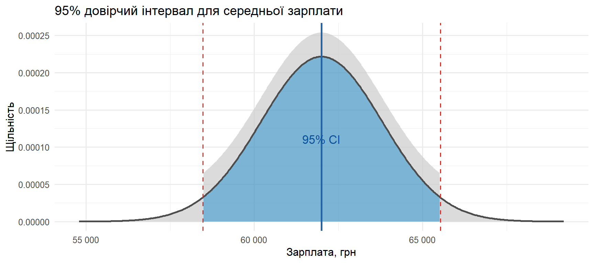
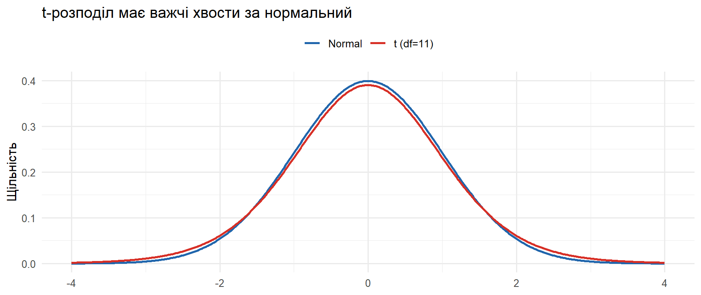
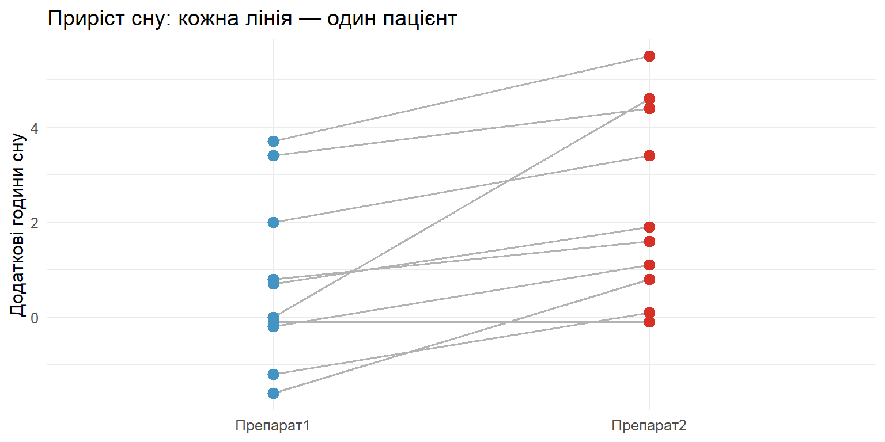
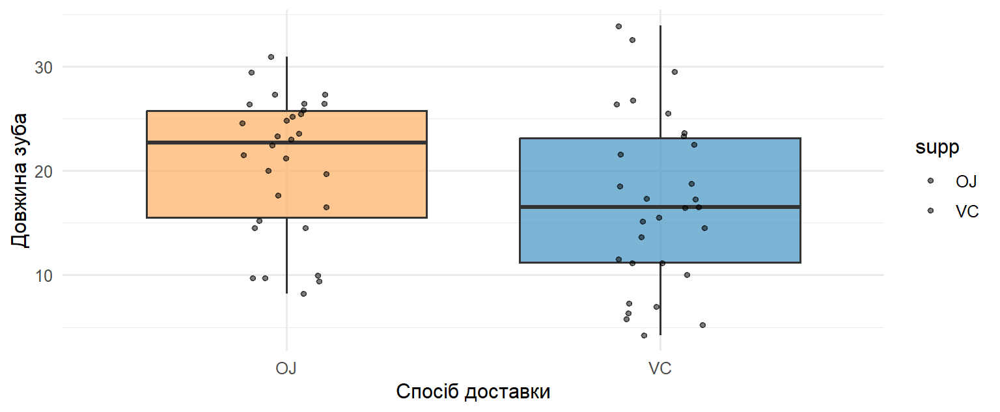
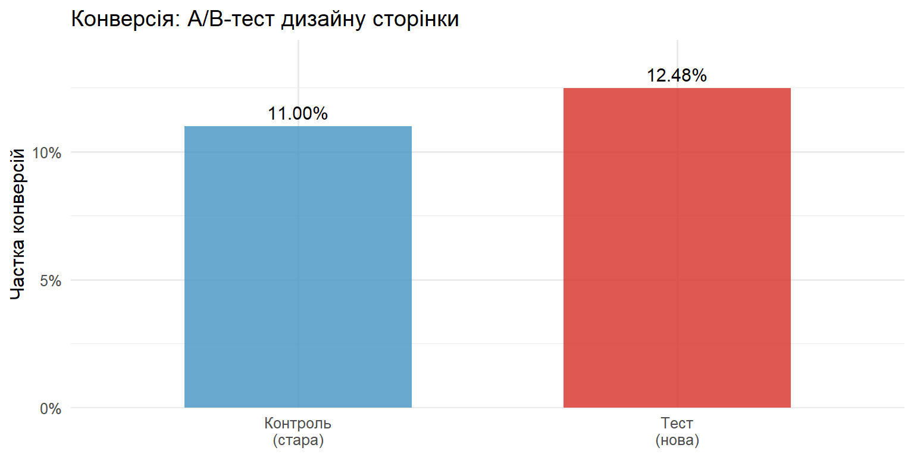

SE = 1800.0 грнz(0.975) = 1.9600, ME = 3527.9 грн95% CI: (58472; 65528) грнSTAT250: Теорія ймовірностей та статистика
Kyiv School of Economics
2026-06-15
Економісти рідко спостерігають усю сукупність → беруть вибірку й роблять висновок.
\[ \text{Вибірка} \;\longrightarrow\; \text{Висновок про сукупність} \]
| Інструмент | Питання | R |
|---|---|---|
| Довірчий інтервал | Який діапазон для \(\mu\)? | t.test, qnorm |
| Одновибірковий t-тест | Чи \(\mu \ne \mu_0\)? | t.test(x, mu=) |
| Двовибірковий / Welch | Чи \(\mu_1 \ne \mu_2\)? | t.test(x, y) |
| Парний t-тест | Чи \(\mu_D \ne 0\)? | t.test(paired=TRUE) |
| Тест пропорцій | Чи \(p_1 \ne p_2\)? | prop.test |
Довірчий інтервал (загальна форма):
\[ \text{Оцінка} \pm \underbrace{\text{Критичне значення}}_{z \text{ або } t} \times \underbrace{\text{Стандартна похибка}}_{\sigma/\sqrt{n}\;\text{або}\;s/\sqrt{n}} \]
Статистика t-тесту:
\[ t = \frac{\bar{X} - \mu_0}{s/\sqrt{n}} \sim t_{n-1} \]
Відома \(\sigma\) → \(z\)-розподіл. Невідома \(\sigma\) → \(t\)-розподіл (важчі хвости). Правило рішення: якщо \(p < \alpha\) → відхиляємо \(H_0\).
Аналітик оцінює середню зарплату в IT. Відомо \(\sigma = 18\,000\) грн. Вибірка \(n = 100\) дала \(\bar{X} = 62\,000\) грн.
Побудуйте 95% довірчий інтервал для справжньої середньої зарплати.
Підказка: оскільки \(\sigma\) відома → \(z\)-інтервал:
\[\bar{X} \pm z_{1-\alpha/2}\,\frac{\sigma}{\sqrt{n}}, \qquad z_{0.975} = 1.96\]
Стандартна похибка:
\[ \text{SE} = \frac{\sigma}{\sqrt{n}} = \frac{18000}{\sqrt{100}} = 1800 \text{ грн} \]
Похибка (margin of error):
\[ \text{ME} = z_{0.975}\cdot\text{SE} = 1.96 \times 1800 = 3528 \text{ грн} \]
Інтервал:
\[ 62000 \pm 3528 = (58\,472;\; 65\,528) \text{ грн} \]
Висновок: з рівнем довіри 95% середня зарплата лежить у межах 58 472 – 65 528 грн.
SE = 1800.0 грнz(0.975) = 1.9600, ME = 3527.9 грн95% CI: (58472; 65528) грнtibble(x = seq(x_bar - 4 * se, x_bar + 4 * se, length.out = 500)) |>
mutate(density = dnorm(x, x_bar, se),
in_ci = x >= ci[1] & x <= ci[2]) |>
ggplot(aes(x = x, y = density)) +
geom_area(aes(fill = in_ci), alpha = 0.7, show.legend = FALSE) +
geom_line(color = "grey30", linewidth = 1) +
geom_vline(xintercept = ci, linetype = "dashed", color = "#d73027") +
geom_vline(xintercept = x_bar, color = "#2166ac", linewidth = 1) +
scale_fill_manual(values = c("TRUE" = "#4393c3", "FALSE" = "grey80")) +
scale_x_continuous(labels = label_number(big.mark = " ")) +
annotate("text", x = x_bar, y = dnorm(x_bar, x_bar, se) * 0.5,
label = "95% CI", color = "#08519c", size = 4.5) +
labs(title = "95% довірчий інтервал для середньої зарплати",
x = "Зарплата, грн", y = "Щільність") +
theme_minimal(base_size = 12)
Стартап виміряв час відгуку API (мс) у 12 запитах:
118, 124, 131, 109, 127, 140, 115, 122, 133, 119, 126, 130
Побудуйте 97% довірчий інтервал для середнього часу відгуку. Дисперсія сукупності невідома.
Підказка: мала вибірка + невідома \(\sigma\) → \(t\)-розподіл з \(n-1 = 11\) df:
\[\bar{X} \pm t_{1-\alpha/2,\,n-1}\cdot\frac{s}{\sqrt{n}}\]
n = 12, X̄ = 124.50 мс, s = 8.54 мсt(0.985, 11) = 2.490797% CI: (118.36; 130.64) мсПеревірка через t.test():
Критичне значення \(t_{0.985,\,11} \approx 2.49\) більше за \(z_{0.985} \approx 2.17\).
tibble(t = seq(-4, 4, length.out = 500)) |>
mutate(Normal = dnorm(t), `t (df=11)` = dt(t, df = 11)) |>
pivot_longer(-t, names_to = "dist", values_to = "density") |>
ggplot(aes(t, density, color = dist)) +
geom_line(linewidth = 1) +
scale_color_manual(values = c("Normal" = "#2166ac", "t (df=11)" = "#d73027")) +
labs(title = "t-розподіл має важчі хвости за нормальний",
x = NULL, y = "Щільність", color = NULL) +
theme_minimal(base_size = 12) +
theme(legend.position = "top")Важчі хвости — «плата» за оцінювання \(\sigma\) та малу вибірку.

sleep)Датасет sleep — приріст годин сну у 10 пацієнтів для двох препаратів. Беремо Препарат 1.
Чи збільшує Препарат 1 тривалість сну більш ніж на 0 годин? \[H_0: \mu = 0 \quad\text{проти}\quad H_a: \mu > 0\]
Підказка: \(t = \dfrac{\bar{X} - \mu_0}{s/\sqrt{n}}\), одностороння альтернатива → відхиляємо при \(t > t_{1-\alpha,\,n-1}\).
[1] 0.7 -1.6 -0.2 -1.2 -0.1 3.4 3.7 0.8 0.0 2.0X̄ = 0.750, s = 1.789, t = 1.326, p = 0.1088\(p \approx 0.11 > 0.05\) → не відхиляємо \(H_0\).
Хоча в середньому Препарат 1 трохи збільшує сон (\(\bar{X} \approx 0.75\) год), доказів статистично значущого ефекту при \(\alpha = 0.05\) недостатньо.
Відсутність значущості \(\ne\) доказ відсутності ефекту — можливо, замала вибірка (низька потужність).
sleep)Кожен пацієнт отримав обидва препарати → спостереження спарені. Нехай \(D = \text{Препарат 2} - \text{Препарат 1}\).
Чи є значуща різниця в ефективності? \[H_0: \mu_D = 0 \quad\text{проти}\quad H_a: \mu_D \ne 0\] Побудуйте 95% довірчий інтервал.
Підказка: парний тест = одновибірковий на різницях \(D_i\): \(\;t = \dfrac{\bar{D}}{s_D/\sqrt{n}}\).
D̄ = 1.580, s_D = 1.230, t = 4.062, p = 0.00283tibble(id = factor(1:n), Препарат1 = drug1, Препарат2 = drug2) |>
pivot_longer(-id, names_to = "drug", values_to = "extra") |>
ggplot(aes(x = drug, y = extra, group = id)) +
geom_line(color = "grey70") +
geom_point(aes(color = drug), size = 3, show.legend = FALSE) +
scale_color_manual(values = c("Препарат1" = "#4393c3", "Препарат2" = "#d73027")) +
labs(title = "Приріст сну: кожна лінія — один пацієнт",
x = NULL, y = "Додаткові години сну") +
theme_minimal(base_size = 12)\(p \approx 0.003 < 0.05\) → відхиляємо \(H_0\): Препарат 2 додає \(\approx 1.58\) год; 95% CI не містить нуля.

ToothGrowth)Вплив вітаміну C на ріст зубів: OJ (сік) vs VC (аскорбінова кислота).
Чи впливає спосіб доставки на довжину зубів? Рівень значущості \(\alpha = 0.1\), 90% CI. \[H_0: \mu_{OJ} = \mu_{VC} \quad\text{проти}\quad H_a: \mu_{OJ} \ne \mu_{VC}\]

Welch Two Sample t-test
data: len by supp
t = 1.9153, df = 55.309, p-value = 0.06063
alternative hypothesis: true difference in means between group OJ and group VC is not equal to 0
90 percent confidence interval:
0.4682687 6.9317313
sample estimates:
mean in group OJ mean in group VC
20.66333 16.96333 welch <- t.test(len ~ supp, data = ToothGrowth, var.equal = FALSE)
pooled <- t.test(len ~ supp, data = ToothGrowth, var.equal = TRUE)
tibble(
Тест = c("Welch", "Pooled"),
t = c(welch$statistic, pooled$statistic),
df = c(welch$parameter, pooled$parameter),
p_value = c(welch$p.value, pooled$p.value)
) |>
mutate(across(c(t, p_value), \(v) round(v, 4)), df = round(df, 2))# A tibble: 2 × 4
Тест t df p_value
<chr> <dbl> <dbl> <dbl>
1 Welch 1.92 55.3 0.0606
2 Pooled 1.92 58 0.0604\(p \approx 0.06\): при \(\alpha = 0.1\) → відхиляємо \(H_0\); при \(\alpha = 0.05\) → ні. Рішення залежить від обраного рівня значущості!
Інтернет-магазин тестує новий дизайн сторінки:
Чи відрізняються конверсії? \(\alpha = 0.05\). \[H_0: p_{control} = p_{treatment} \quad\text{проти}\quad H_a: p_{control} \ne p_{treatment}\]
Підказка: \(\hat{p} = \dfrac{x_1+x_2}{n_1+n_2}, \quad Z = \dfrac{\hat{p}_1 - \hat{p}_2}{\sqrt{\hat{p}(1-\hat{p})\left(\frac{1}{n_1}+\frac{1}{n_2}\right)}}\)
Вибіркові частки:
\[ \hat{p}_1 = \frac{528}{4800} = 0.1100, \qquad \hat{p}_2 = \frac{593}{4750} = 0.1248 \]
Об’єднана оцінка під \(H_0\):
\[ \hat{p} = \frac{528 + 593}{4800 + 4750} = \frac{1121}{9550} \approx 0.1174 \]
Статистика:
\[ Z = \frac{0.1100 - 0.1248}{\sqrt{0.1174 \cdot 0.8826 \left(\frac{1}{4800}+\frac{1}{4750}\right)}} \approx -2.37 \]
2-sample test for equality of proportions without continuity correction
data: successes out of trials
X-squared = 5.0763, df = 1, p-value = 0.02426
alternative hypothesis: two.sided
95 percent confidence interval:
-0.027753674 -0.001930537
sample estimates:
prop 1 prop 2
0.1100000 0.1248421 p̂1 = 0.1100, p̂2 = 0.1248, p̂_pool = 0.1174Z = -2.253, Z² = 5.076, p-value = 0.0243\(p \approx 0.018 < 0.05\) → відхиляємо \(H_0\): нова сторінка дає вищу конверсію.
tibble(
group = c("Контроль\n(стара)", "Тест\n(нова)"),
rate = c(p1, p2)
) |>
ggplot(aes(x = group, y = rate, fill = group)) +
geom_col(alpha = 0.8, width = 0.6, show.legend = FALSE) +
geom_text(aes(label = percent(rate, accuracy = 0.01)), vjust = -0.5, size = 4) +
scale_fill_manual(values = c("#4393c3", "#d73027")) +
scale_y_continuous(labels = percent_format(), expand = expansion(c(0, 0.15))) +
labs(title = "Конверсія: A/B-тест дизайну сторінки",
x = NULL, y = "Частка конверсій") +
theme_minimal(base_size = 12)
| № | Тип задачі | Метод | R | Результат |
|---|---|---|---|---|
| 1 | CI, відома \(\sigma\) | \(z\)-інтервал | qnorm |
(58 472; 65 528) грн |
| 2 | CI, невідома \(\sigma\) | \(t\)-інтервал | t.test |
ширший за \(z\) |
| 3 | Одновибірковий t-тест | \(t_{n-1}\) | t.test(mu=) |
\(p\approx 0.11\) — не відхиляємо |
| 4 | Парний t-тест | \(t\) на різницях | paired=TRUE |
\(p\approx 0.003\) — значуще |
| 5 | Двовибірковий t-тест | Welch / pooled | t.test(~) |
\(p\approx 0.06\) — залежить від \(\alpha\) |
| 6 | Дві пропорції (A/B) | \(z\)-тест | prop.test |
\(p\approx 0.018\) — нова краща |
Дякую за увагу!
STAT250 · KSE · Практичне заняття 6